Fécamp 2010

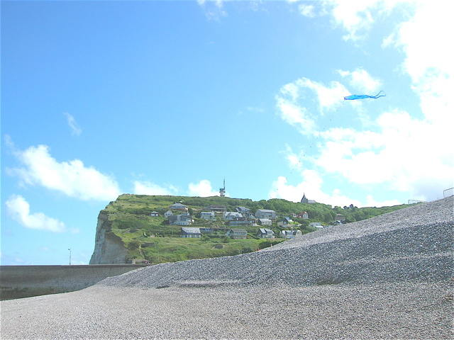
Fécamp, sa plage de caillou, bien sûr, mais ils ont encore agrandi la partie artificielle en sable près de la promenade. C'est plat et bien agréable, sinon, voler là, ce serait dur !

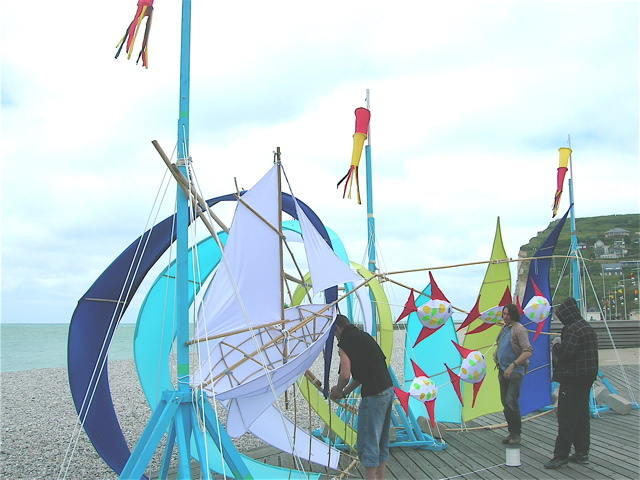
Diverses oeuvres d'art de ce style en ville et sur la promenade... Inspiration cervolistisante, en bambou et toile, mais pas repliable ni perenne : les bambous sont scotchés entre eux, et la toile collée...

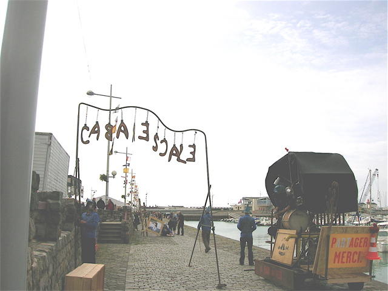
De nombreuses animations musicales, la Fête de la Musique est conjointe ! Par exemple ce Cabarescale, avec un char portant 2 musiciens, et des panneaux au verso soixante-huitard comme "Un acte désintéressé est-il possible ?" .

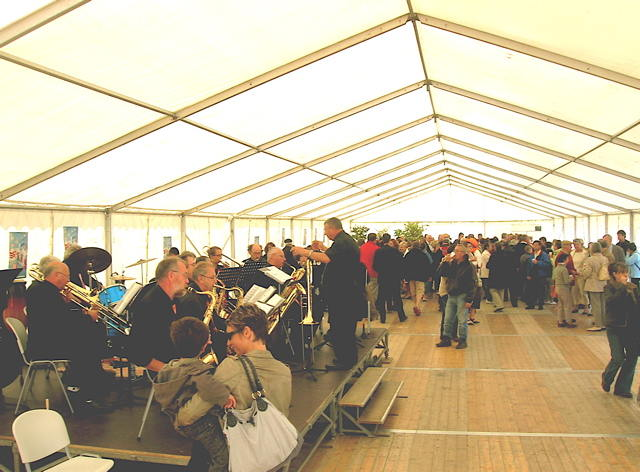
Ce vendredi, déjà, un cocktail général dans l'immense barnum, au son d'un bon orchestre...

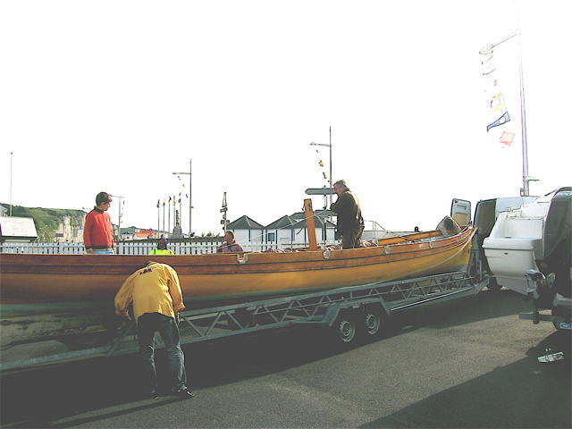
Des vieux gréements continuent d'arriver, les plus petits... par la route comme cette magnifique yole de Bantry toute en bois verni, qui peut marcher à la rame (8 rameurs !) ou à la voile...

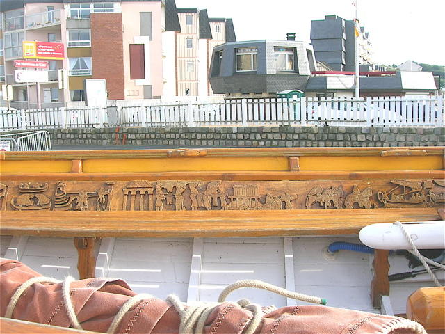
L'intérieur est même décoré pour le plaisir de l'équipage d'une fresque en bois sculpté style tapisserie de Bayeux...

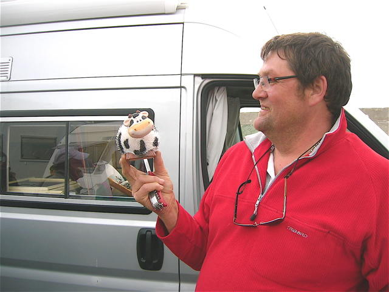
Les Anglais ont débarqué ! Connaissant Thierry, ils lui ont fait cadeau d'une jolie vache anglaise ! Ils en ont aussi une autre plus grande qui chante et danse, mais ils la gardent...

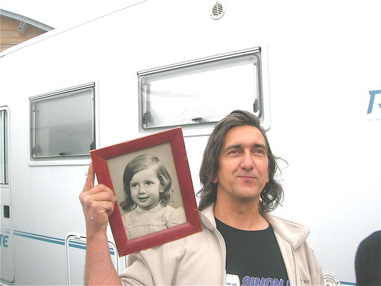
Bernard arrive aussi et nous montre ses photos de jeunesse ! On le reconnaît bien !

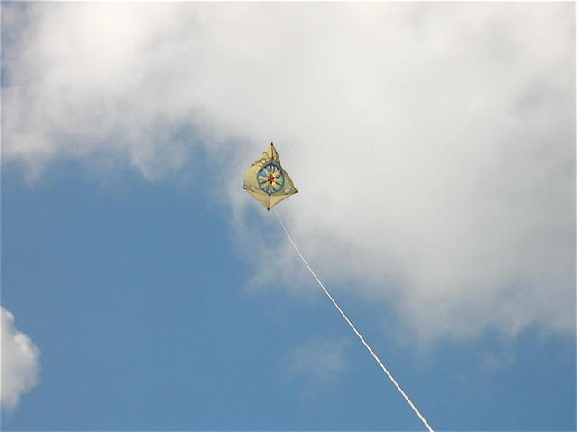
Samedi matin, vent solide et turbulent ! Michel Dubuisson, qu'on ne voit plus souvent mais qui est né pas loin, a fait voler son Rokkaku, mais avec ces conditions, il a cassé une vergue et vole bien mieux la tête en bas...

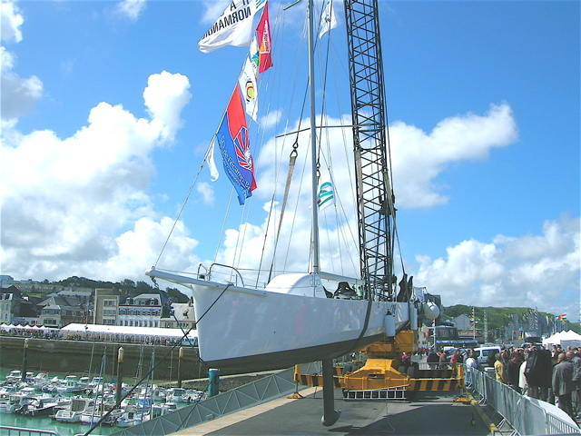
Sur le port, un voilier un peu spécial attend sous la grue !

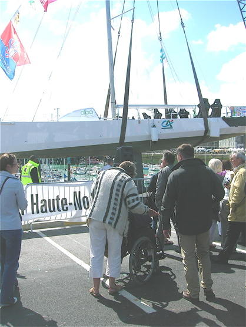
Il s'agit d'un bateau spécialement équipé pour embarquer un équipage de handicapés ! Il est doté de sièges spéciaux genre baquet de voiture de sport, pour au moins 6 personnes...

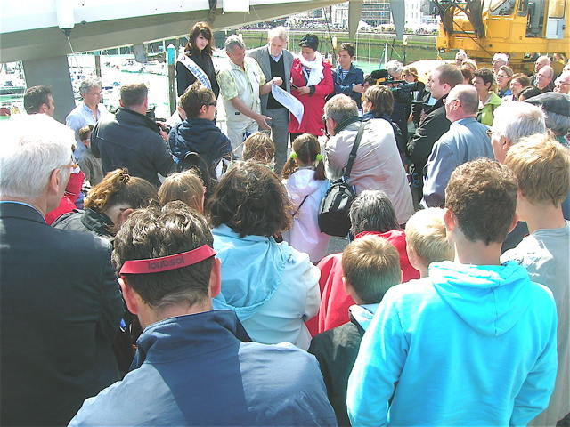
Cérémonie officielle, Dauphine de Miss France (2009) jolie et sourde-muette, discours, remise de chèques, plusieurs de 1000 Euros et un du CA de 50000 Euros !

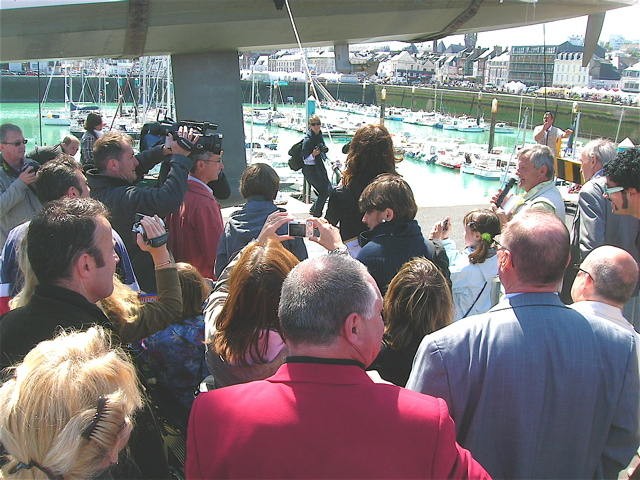
Ca y est, la Miss va lancer la bouteille de champ' qui cassera au premier coup, heureux présage !

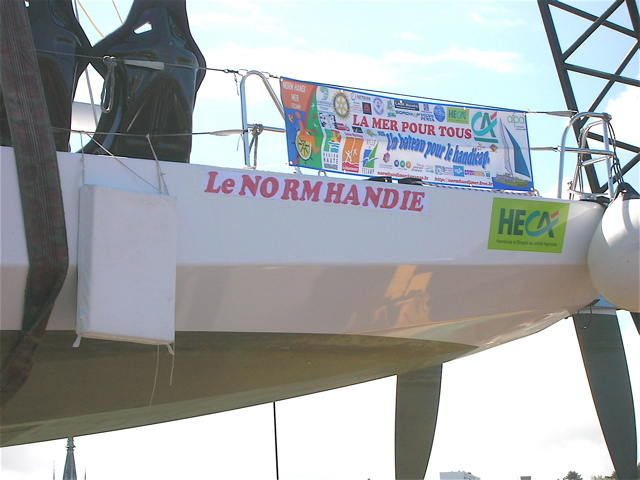
Et le nom du bâtiment est dévoilé, ce sera le NORM HANDIE !

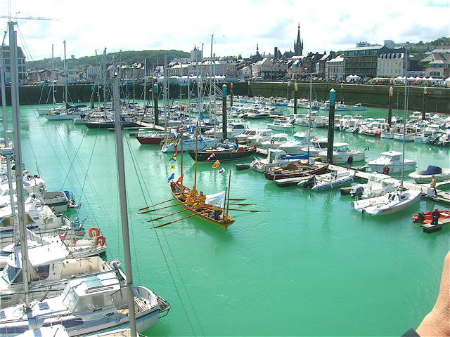
Dans le bassin, la yole armée de ses 8 rameurs attend son nouveau compagnon...

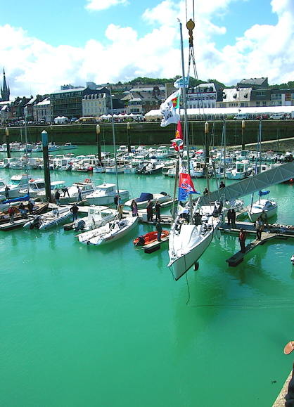
Ca y est le bulbe a touché l'eau, le lancement est réussi !

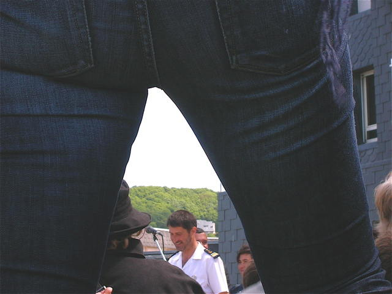
Sur la terrasse du Musée maritime, apéritif général d'Eurovoiles ! J'ai du mal à prendre des photos, une photographe s'est placée sans vergogne devant moi...

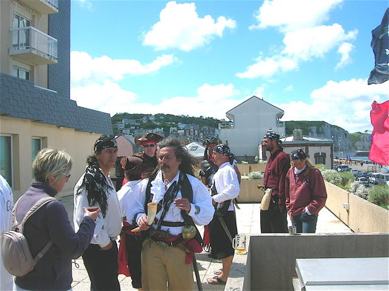
Notre cervoliste anglais recevra aussi un cadeau qu'il refusera d'ouvrir devant nous, sans doute une bouteille de Bénédictine ! Les Pirates sont venus en uniforme pour animer le show...

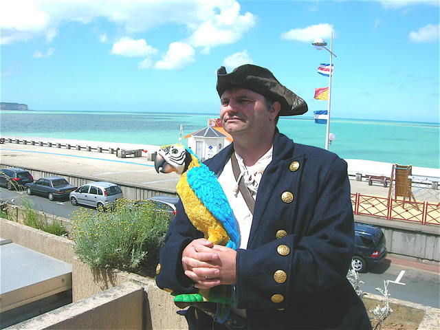
Jean-Claude fait un pirate très convaincant avec son perroquet favori et parleur !

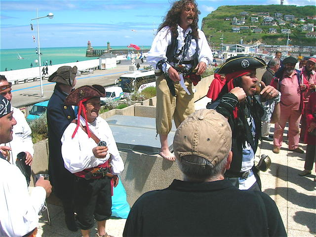
Yves annonce la couleur : 4 nouveaux Pirates seront intronisés officiellement aujourd'hui et subiront des épreuves tout au long de la journée !

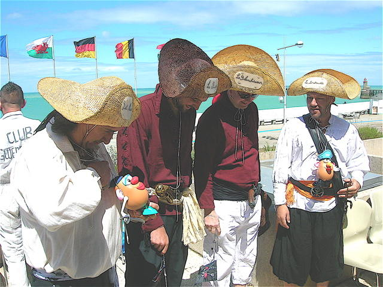
Les 4 nouveaux ont reçu leur chapeau à leur nom qu'ils ne devront pas quitter aujourd'hui : Bat Manouche, La Classe, le Blanchisseur et La Tambouille n'osent pas lever les yeux...

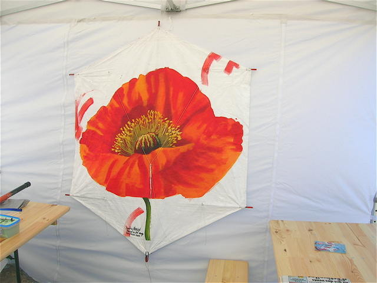
Retour au barnum, décoré d'un beau cerf-volant peint d'un splendide coquelicot par un membre de l'association Art Images à laquelle Atout Vent en a fait cadeau... vierge ! En retour, Art Images a offert cinq toiles qui seront les prix du Concours de création de cerf-volant...

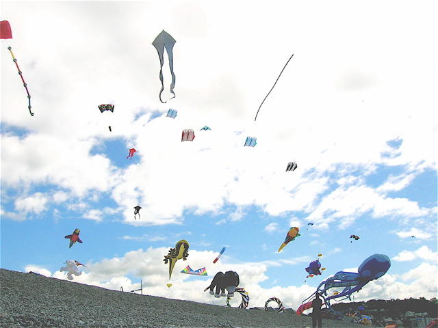
Le vent tourne un peu, moins de la colline et plus de la mer, reste fort mais moins turbulent et les cerfs-volants montent en nombre !

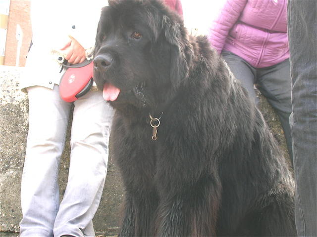
Le Rokkaku attaché et stable, je vais faire le tour de la fête ! Il y a, comme d'habitude, des Terres-Neuves qui font des exercices de repêchage dans le port...

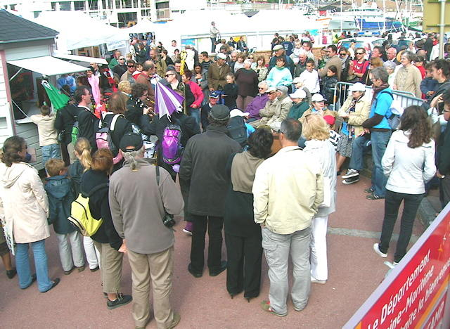
Dans le village de la Musique, les orchestres se succèdent quasiment en permanence...

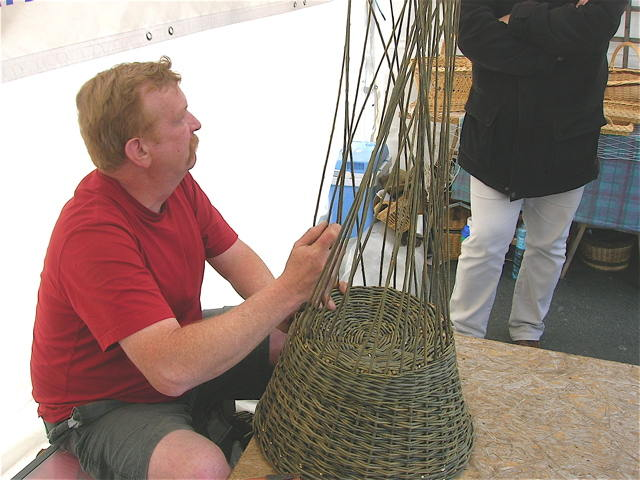
Un vannier explique son travail : à l'aide d'un poinçon, il ouvre un passage puis y force un brin qui permettra d'agrandir l'ouvrage...

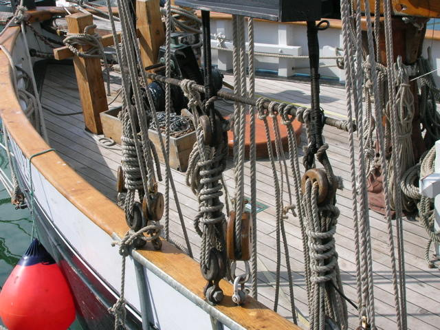
Au bord du quai, évidemment, quelques Vieux Gréements avec leur assemblage de bois et de filins complexe, mais fruit de l'expérience !

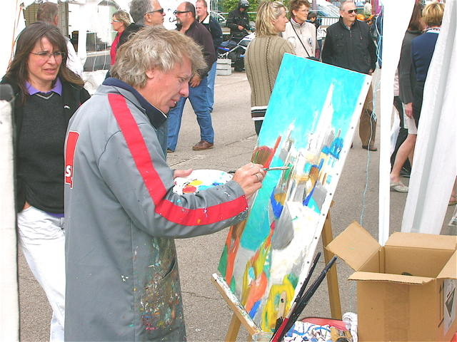
De l'autre côté du bassin à flot, des peintres qui... peignent devant les passants et vendront à la fin d'Estivoiles leurs toiles réalisées en direct ! Pas mal d'entre eux font de bonnes choses...

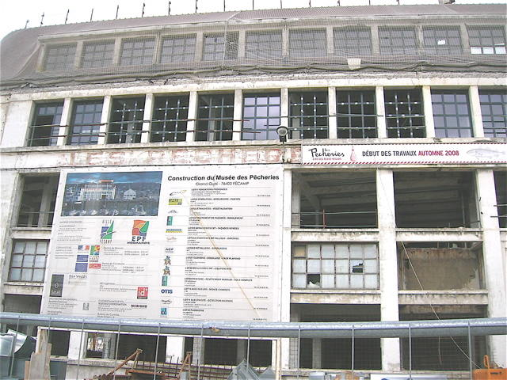
L'ancien bâtiment des Pêcheries de Fécamp est complètement dépiauté et deviendra, rénové, modifié et agrandi, le nouveau musée "des Pêcheries" qui reprendra le contenu de celui existant sur la Promenade, augmenté et redisposé !

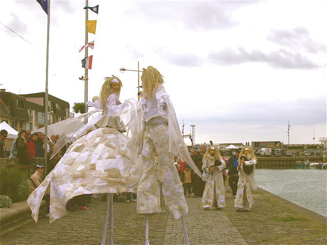
Sur les quais du bassin bas, les animations continuent, comme ces danseurs sur échasses virevoltant au son de cornemuses !

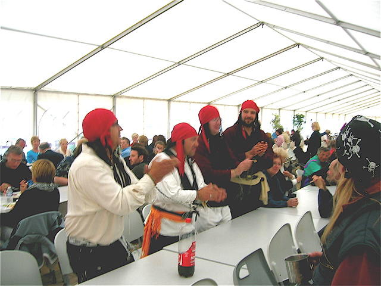
Au soir, dîner sous le barnum avec tous les participants d'Estivoiles... Les pénitents Pirates arrivent, les poignets enchaînés et liés tous les quatre ensemble !

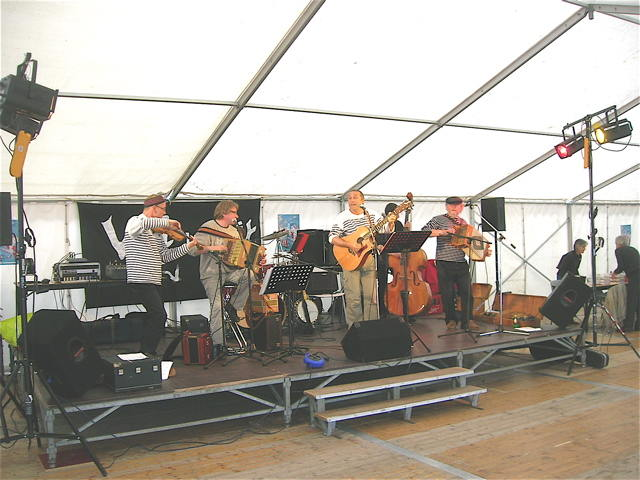
L'orchestre de Vol de Nuit animera le repas avec son vaste répertoire de chanson et l'entrain qui l'avait fait apprécier l'an dernier... Dommage qu'il doive s'arrêter vers 10 h pour laisser la place à l'orchestre du concert sur la scène géante et magnificente, mais dont la qualité est beaucoup moins enthousiasmante...

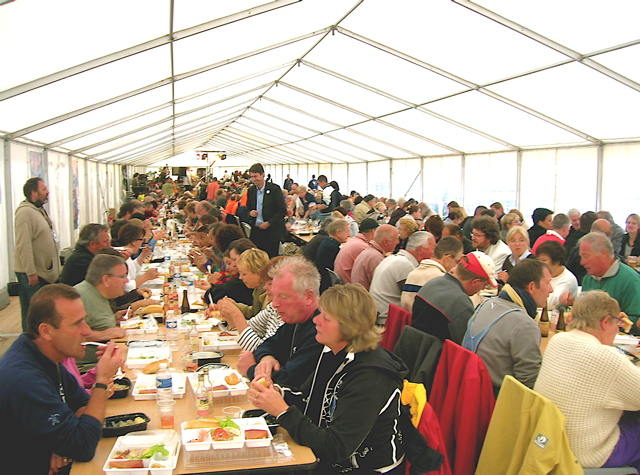
Le repas tourne autour du poisson, avec en particulier une excellente Choucroute de la mer... Les rencontres et les conversations vont bon train !

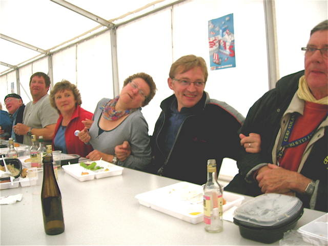
L'ambiance est chaude, en fonction des chansons, avec un balancement bien marin pour les plus rythmées...

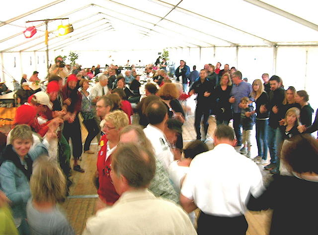
Et on danse, des gigues, des Scottish, styles fest-noz ou farandoles...

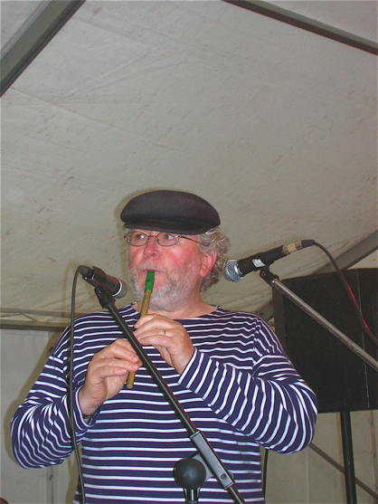
Le musicien des instruments à vent a une bonne tête à jouer de la cornemuse, pour l'instant, il est au flûtiau !

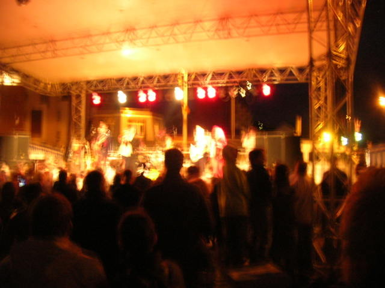
Ensuite vol de nuit ? Trop turbulent pour tous, sauf les Pirates qui présentaient un féerique ballet avec les Nasas blanches de 2 m2 agrémentées d'un tube lumineux... Le concert extérieur était géant, par la taille de la scène, les éclairages, la sono ! Ils n'étaient pas très nombreux, mais avec une bonne sono, on fait ce qu'on veut. Bon, mais je persiste à préférer ceux du barnum...

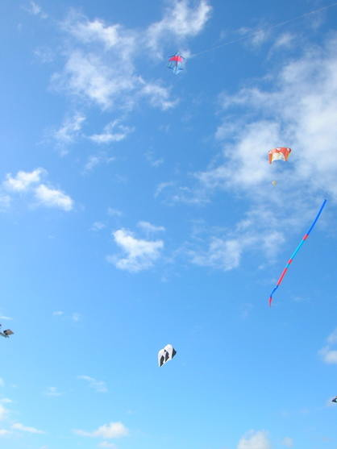
mais ca m'est egal, na !
Dimanche matin, le vent est encore fort et turbulent, mais il tournera à la mer, donc plus de tourbillons liés à la falaise et la colline, et ça volera mieux ! Je commence quand même avec mon Rokkaku, là-haut, mais l'après-midi, avec le concours, je lancerai la grue qui se comportera très bien...

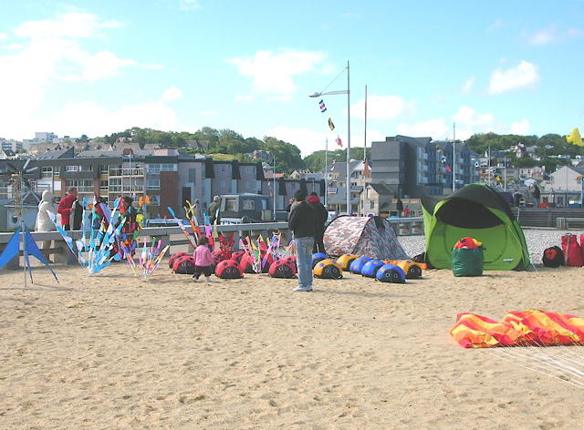
Fabian est venu avec sa famille et son club de Somain... Ils n'hésitent pas à monter les tentes et à sortir quelques gonflables et une belle collection de coccinelles !

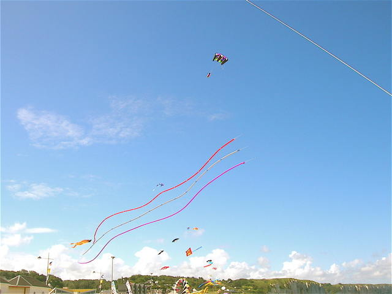
Les Hurricane sont là avec leur remorque incroyable et des tas de cerfs-volants. On admire aussi ces belles queues dont on reparlera... Après sa panne de Rokkaku, Michel Dubuisson a finalement réussi à monter ses 2 léopards normands sous un PowerSled !

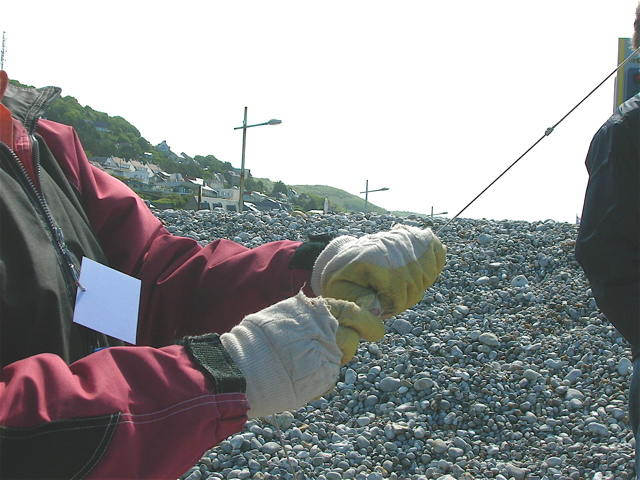
Mais quand même, ça tire et François qui a sorti son grand Conyne a dérogé a ses habitudes et mis les gants...

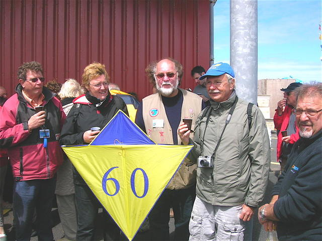
Avant déjeuner, on fête l'anniversaire du jeune Philippe qui reçoit un Jessy souvenir !

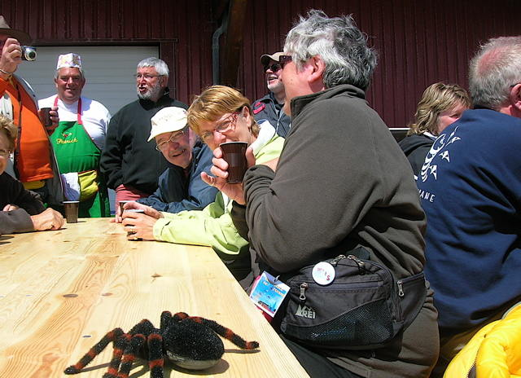
Comme l'année dernière, cause vent, le déjeuner-barbecue se tient derrière les bâtiments du club nautique... Bernard a amené une impressionnante araignée télécommandée qui avance, tourne, et agite les pattes...

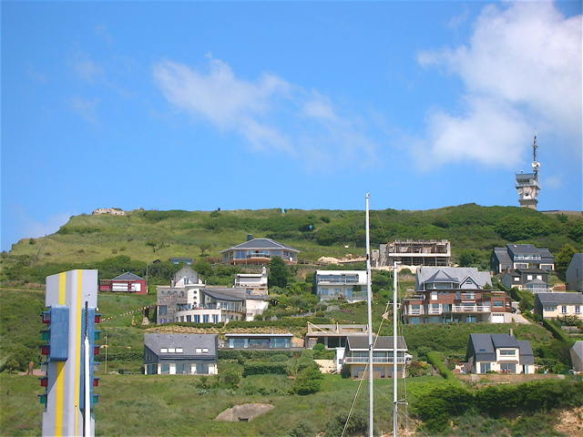
De là, on a une belle vue sur la colline et les "petites" villas qui s'y construisent encore (1000 m2 minimum !)...

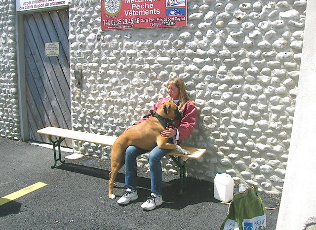
Baya, la chienne de Jean-Claude, se repose un peu sur les genoux de Corinne la Piratesse. Je ne sais pas si ça repose Corinne...

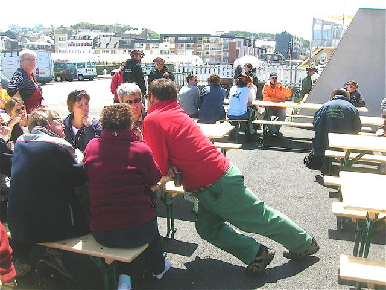
Thierry fait de même à la table de Line, mais Jean-François s'est interposé...

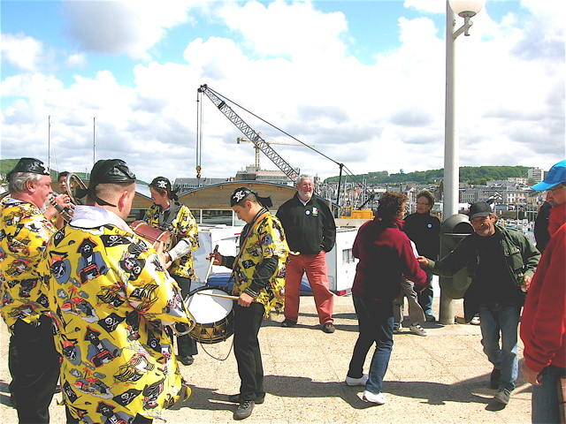
Retour sur la promenade, un orchestre de plus, avec des chemises pirates ! P'tit Michel se sent obligé de faire avec grâce un petit tour de gigue...

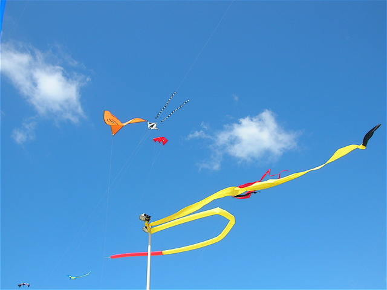
Johan Joyeux créé une nouvelle animation avec divers essais de dénouage de queue... Ici, elle est tirée par le delta orange, sans aucun effet. Finalement, c'est avec une canne à pêche de Bruno Tondellier, aussi haute que le réverbère (!) que l'affaire se dénouera !

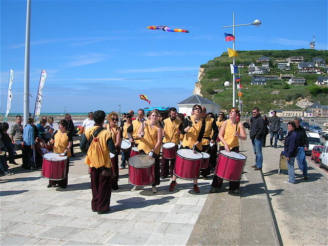
Encore un orchestre (c'est la Fête de la Musique, je répète pour ceux qui n'ont pas suivi...) enfin, une batterie, pleine de filles musclées (forcément !), qui vient nous rendre un petit hommage...

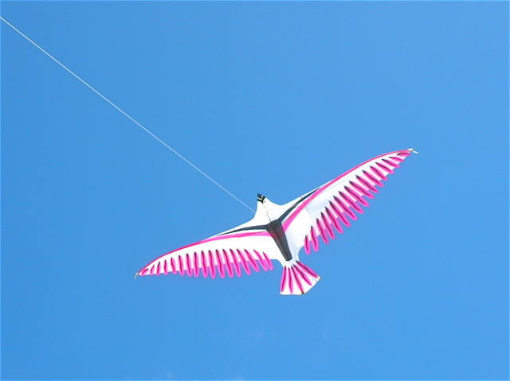
Michel (vous savez, le Belge aux cheveux blancs), a lancé son grand oiseau aux plumes magnifiques...

Tiens, beaucoup de bateaux de toutes tailles sont sortis malgré l'heure avancée, même le Patrouilleur sera de la partie ! Bien sûr, c'est la grande Bénédiction des bateaux, et elle se fait à l'heure de la marée haute pour permettre la petite sortie...

Sur l'estrade de la plage elle-même, encore un orchestre, batterie, 2 guitares électriques, une basse, chanteuse, assez bons...

Il y a pas mal de monde en l'air finalement, le concours de création a motivé les envols, raie (de Philippe ?), Genki modifié à queue de Sylvie Perry, ma grue, et bien d'autres...

Un bateau rapide rentre au port, pas assez rapide quand même pour semer les mouettes !

Le festival se termine, on prend les voitures, nous sommes invités à la salle du club, où quelques restes nous attendront pour le dîner... Pour les finir, il faudrait bien être 3 fois plus, on ne mesquine pas à Fécamp !

La salle du club est dans un ancien hôpital reconverti pour héberger les associations. Il y a de la place... et du matériel dont une Pfaff pro.... et quelques machines amateurs... et du spi, et des barres, et des patrons...

Les tables sont en fer, bien lisses, et des bandes aimantées permettent d'y plaquer les patrons sur le spi, ou l'inverse... Mais on n'est pas là pour ça, bien que la discussion tourne souvent autour... Au premier plan, à gauche, Manou, la femme de Philippe, a reçu cette année son tablier de cuisinière, brodé à son nom et avec l'insigne du club, pour ses grands mérites et malgré sa modestie...

Je dormirai ensuite dans la cour de l'hôpital et lundi matin, retour tranquille. Et voilà, la toile que j'ai gagnée au concours (1er prix avec ma grue) est accrochée sur mon mur en bonne place !
Fécamp 2010 : Finalement, on a eu du temps assez beau, mais extrêmement froid pour ce 21 juin où débute officiellement l'été... Beaucoup de vent, et turbulent, mais ça a bien volé quand même. Mais on vient surtout à Fécamp pour l'ambiance et l'accueil !